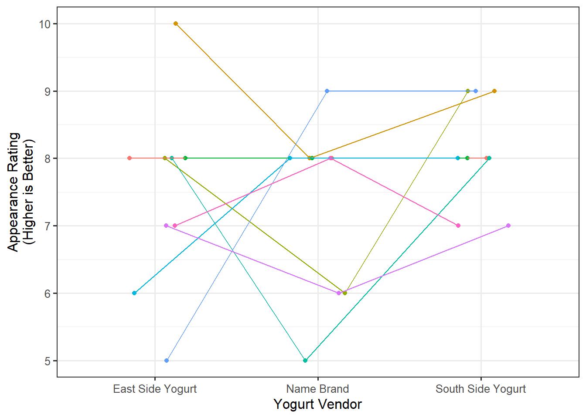
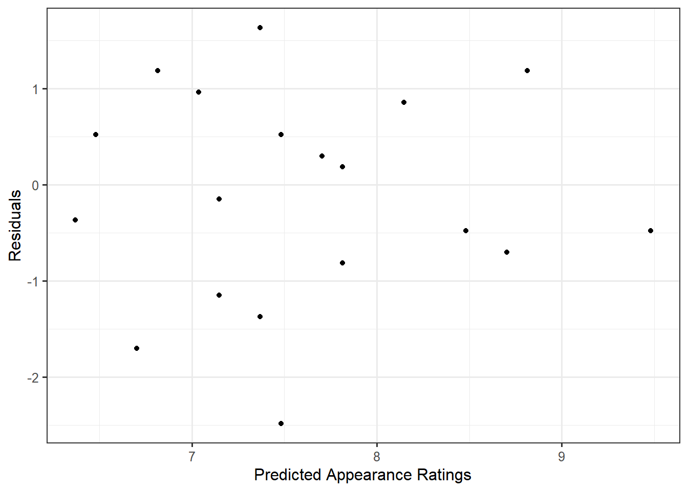
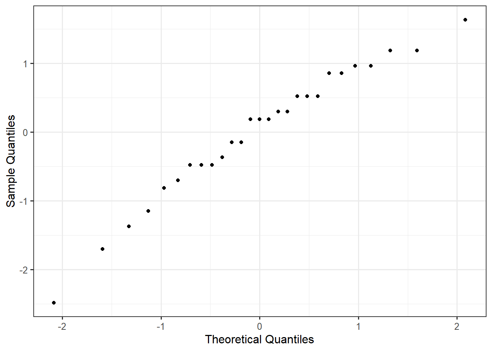
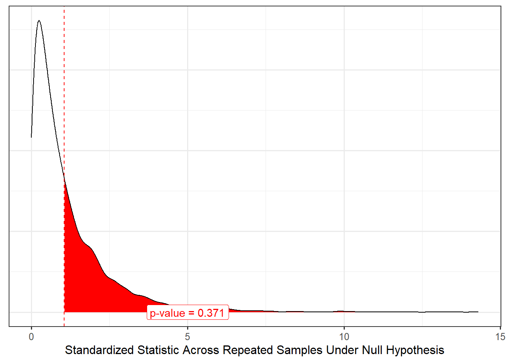

40 Using the Tools Together
This unit introduced a framework for determining if there is an association between a quantitative response and a categorical predictor in the presence of blocking. We formed a standardized statistic for measuring the signal, and developed a model for the data generating process incorporating the block effect which allowed us to model the null distribution of the standardized statistic. In this chapter, we pull these tools together once more to answer a research question.
For the Frozen Yogurt Case Study, we found no evidence that college students rated the taste differently, on average, for any of the vendors. However, the students conducting the study also recorded how the participants rated the texture and appearance of the yogurt. In this chapter, we will use the data to answer the following question:
Is there evidence that the appearance of the yogurt differs across vendors?
40.1 Framing the Question (Fundamental Idea I)
As stated, the above question is ill-posed. We have not identified a parameter of interest. We refine this question to be
Is there evidence that, on average, the appearance rating differs for at least one of the vendors?
This question could also be stated as the following set of hypotheses:
Let \(\theta_1\), \(\theta_2\) and \(\theta_3\) represent the average appearance rating (on a scale of 1-10) of vanilla yogurt from each of the three vendors (East Side, Name Brand, and South Side), respectively.
\(H_0: \theta_1 = \theta_2 = \theta_3\)
\(H_1:\) At least one \(\theta_j\) differs
40.2 Getting Good Data (Fundamental Idea II)
As we are working with previously collected data, our goal in this discussion is not how best to collect the data but making note of the limitations of the data as a result of how it was collected. As before, each participant sampled yogurt from each of the three vendors, creating natural blocks. That is, each participant forms a unique block. Since it is quite reasonable that appearance preferences vary substantially between individuals, forming blocks out of the participants should allow us to increase the power of the study because we are accounting for a substantial source of variability in the appearance ratings.
The study was was a controlled experiment since the order in which the samples from each vendor were presented to the participants was randomized. While the study made use of random allocation, it did not make use of random selection. The participants were students taking a particular course; however, it may be reasonable to assume they are representative of college students in the area. The sample size was also limited as only students in this course were included in the study.
If you compare the above paragraph to the corresponding section in Chapter 31, you might be confused because in that section, we described that changing the question resulted in the study no longer being a controlled experiment. However, here, we changed the question of interest and retained the fact that the study was a controlled experiment. The question of whether a study is a controlled experiment is always in regard to whether random allocation was used. In general, if you change the response but keep the primary factor of interest unchanged, the study will remain a controlled experiment. If you change the factor under study, it will become an observational study.
40.3 Presenting the Data (Fundamental Idea III)
Our question here is examining the relationship between a quantitative response (appearance rating) and a categorical predictor (vendor) in the presence of blocks (participants). Figure 40.1 compares the distribution of the appearance rating for the three vendors.
Based on the above graphic, there appears to be less variability among the appearance for the South Side Yogurt vendor, but participants tend to rate the appearance similarly across all three vendors.
40.4 Quantifying the Variability in the Estimate (Fundamental Idea IV)
In order to measure the size of the signal, we partition the variability in an ANOVA table, which allows us to compute a standardized statistic. In order to partition the variability, we first consider the following model for the data generating process:
\[ \begin{aligned} (\text{Appearance Rating})_i &= \mu_1 (\text{East Side})_i + \mu_2 (\text{Name Brand})_i + \mu_3 (\text{South Side})_i \\ &\qquad + \beta_2 (\text{Participant 2})_i + \beta_3 (\text{Participant 3})_i + \beta_4 (\text{Participant 4})_i \\ &\qquad + \beta_5 (\text{Participant 5})_i + \beta_6 (\text{Participant 6})_i + \beta_7 (\text{Participant 7})_i \\ &\qquad + \beta_8 (\text{Participant 8})_i + \beta_9 (\text{Participant 9})_i + \varepsilon_i \end{aligned} \]
where
\[ \begin{aligned} (\text{East Side})_i &= \begin{cases} 1 & \text{if i-th rating associated with east side yogurt vendor} \\ 0 & \text{otherwise} \end{cases} \\ (\text{Name Brand})_i &= \begin{cases} 1 & \text{if i-th rating associated with name brand yogurt vendor} \\ 0 & \text{otherwise} \end{cases} \\ (\text{South Side})_i &= \begin{cases} 1 & \text{if i-th rating associated with south side yogurt vendor} \\ 0 & \text{otherwise} \end{cases} \\ (\text{Participant } m)_i &= \begin{cases} 1 & \text{i-th observation taken from Participant } m \\ 0 & \text{otherwise} \end{cases} \end{aligned} \]
are appropriately defined indicator variables. We note here that \(\mu_1\) is not the same as \(\theta_1\) defined earlier; however, testing
\[H_0: \mu_1 = \mu_2 = \mu_3\]
is equivalent to testing
\[H_0: \theta_1 = \theta_2 = \theta_3\]
as discussed in Chapter 36 (also see Appendix B). Table 40.1 reports the standardized statistic from our study corresponding to testing the hypotheses
\[H_0: \mu_1 = \mu_2 = \mu_3 \qquad \text{vs.} \qquad H_1: \text{at least one } \mu_j \text{ differs.}\]
| Term | DF | Sum of Squares | Mean Square | Standardized Statistic |
|---|---|---|---|---|
| Vendor | 2 | 3.185 | 1.593 | 1.055 |
| Error | 16 | 24.148 | 1.509 |
Of course, if we were to collect a new sample, we would expect our standardized statistic to change. If we want to conduct inference and determine the strength of evidence in this study, we need a model for its null distribution. In order to construct a model for the null distribution of the standardized statistic, we need to place appropriate conditions on the error term, which can include:
- The error in the appearance ratings within one individual is independent of the error in the appearance ratings within any other individual.
- The variability in the error in the appearance ratings is the same for all vendor and participant combinations.
- The error in the appearance ratings follows a Normal distribution.
- The deterministic portion of the model is correctly specified; that is, any differences in the ratings across vendors is the same for all participants.
- One participant’s preferences relative to the population is independent of any other participant’s preferences; that is, the block effects are independent of one another.
- Each participant’s preferences relative to the population is independent of of the error in the appearance ratings of all individuals; that is, the block effects are independent of the error terms.
- Participants’ preferences follow a Normal distribution; that is, the block effects follow a Normal distribution.
Before creating a model for the null distribution and computing a p-value, we need to assess whether the data is consistent with these assumptions. This requires examining the residuals from the model. First, we discuss the assumption of independence. Since the data was collected at a single point in time, known as a cross-sectional study, constructing a time-series plot of the residuals would not provide any information regarding this assumption. Instead, we rely on the context of the problem to make some statements regarding whether the data is consistent with this condition (whether making this assumption is reasonable). It is reasonable that the errors are independent. The primary source of correlation was the repeated measures on each participant, which has been accounted for with the incorporation of the block terms. Additionally, as students were interested in preserving the integrity of the data, they did not influence one another during data collection. We feel it is reasonable to assume independence.
Again, note that there is a condition of independence; we are simply saying whether we are willing to assume the condition is satisfied. There is no way to ensure the condition holds.
In order to assess the constant variance condition, let us examine a plot of the residuals against the predicted values. Figure 40.2 shows a plot of the residuals against the predicted values for our model; the plot does not exhibit any trends in the spread of the residuals as we move across the fitted values. So, it seems reasonable to impose the constant variance condition.

To assess the Normality condition, we consider a Normal probability plot of the residuals (Figure 40.3). Given that the residuals tend to display a linear relationship, it is reasonable that the errors follow a Normal Distribution.

Looking at Figure 40.2, the residuals tend to balance around 0 across all values of the x-axis. This suggests the data is consistent with the deterministic portion of our model for the data generating process being correctly specified. That is, the sample is consistent with the belief that any differences in appearance across vendors is similar for all individuals. Thinking about the context, this seems reasonable; we don’t have any reason to believe that preferences in the appearance of frozen yogurt might differ wildly across individuals.
As is common in practice, while we are not able to assess the conditions placed on the block effects, we are willing to assume them. Given the discussion above, we are comfortable assuming the data is consistent with all conditions from the classical repeated measures ANOVA model (Definition 37.1); therefore, we can make use of an analytical model for the null distribution.
40.5 Quantifying the Evidence (Fundamental Idea V)
Now that we have a model for the null distribution of our standardized statistic, we can determine how extreme our particular sample was by comparing the standardized statistic for our sample with this model for the null distribution (Figure 40.4).

Based on the results, the study does not provide any evidence that college students rate the appearance of the vanilla frozen yogurt different, on average, for any of the three vendors. That is, the sample is consistent with the appearance of the yogurt being similar, on average, across all three vendors. We note that while frozen yogurt shops start with a base of vanilla, their attraction is generally the ability to customize your order (“mix-ins,” unique flavors, etc.). This study only examined vanilla yogurt because it is readily available from both commercial retailers as well as local grocery retailers.
40.6 Conclusion
Throughout this unit, we have examined a framework for examining the association between a quantitative response and a categorical predictor in the presence of blocking. This reinforces a couple of big ideas we have seen throughout this text:
- The key to measuring a signal is to partition the variability in the response.
- A standardized statistic is a numeric measure of the signal strength in the sample.
- Modeling the data generating process provides us a way of modeling the sampling distribution of the parameter estimates and the null distribution of a standardized statistic when combined with conditions on the stochastic portion of the model for the data generating process.
- Before imposing conditions on the stochastic portion of a data generating process, we should graphically assess whether the data is consistent with these conditions.